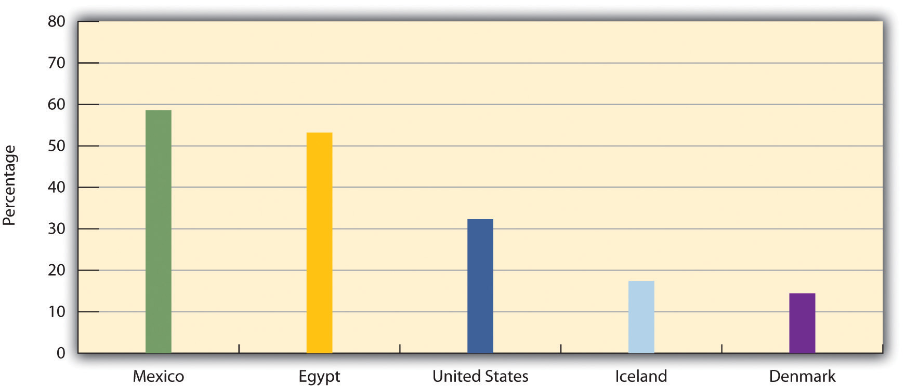
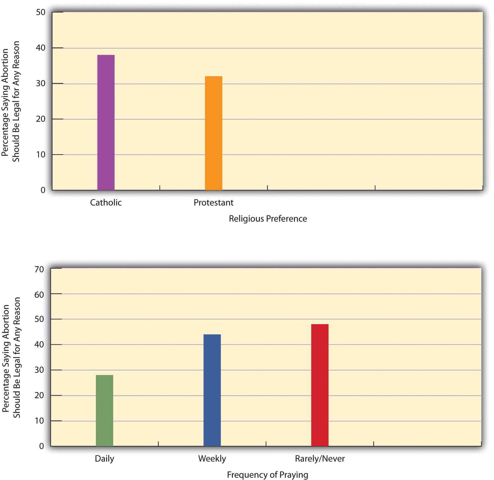

Several institutional and other sources of socialization exist and are called agents of socialization. The first of these, the family, is certainly the most important agent of socialization for infants and young children.
Should parents get the credit when their children turn out to be good kids and even go on to accomplish great things in life? Should they get the blame if their children turn out to be bad? No parent deserves all the credit or blame for their children’s successes and failures in life, but the evidence indicates that our parents do affect us profoundly. In many ways, we even end up resembling our parents in more than just appearance.
Understanding Racial Socialization
In a society that is still racially prejudiced, African American parents continue to find it necessary to teach their children about African American culture and to prepare them for the bias and discrimination they can expect to encounter. Scholars in sociology and other disciplines have studied this process of racial socialization. One of their most interesting findings is that African American parents differ in the degree of racial socialization they practice: some parents emphasize African American identity and racial prejudice to a considerable degree, while other parents mention these topics to their children only minimally. The reasons for these differences have remained unclear.
Sociologist Jason E. Shelton (2008)Shelton, J. E. (2008). The investment in blackness hypothesis: Toward greater understanding of who teaches what during racial socialization. Du Bois Review: Social Science Research on Race, 5(2), 235–257. analyzed data from a national random sample of African Americans to determine these reasons, in what he called “one of the most comprehensive analyses to date of racial socialization strategies among African Americans” (p. 237). Among other questions, respondents were asked whether “in raising your children, have you done or told them things to help them know what it means to be Black.” They were also asked whether “there are any other things you’ve done or told your children to help them know how to get along with White people.”
In his major results, Shelton found that respondents were more likely to practice racial socialization if they were older, female, and living outside the South; if they perceived that racial discrimination was a growing problem and were members of civil rights or other organization aimed at helping African Americans; and if they had higher incomes.
These results led Shelton to conclude that “African Americans are not a culturally monolithic group,” as they differ in “the parental lessons they impart to their children about race relations” (2008, p. 253).Shelton, J. E. (2008). The investment in blackness hypothesis: Toward greater understanding of who teaches what during racial socialization. Du Bois Review: Social Science Research on Race, 5(2), 235–257. Further, the parents who do practice racial socialization “do so in order to demystify and empower their offspring to seize opportunities in the larger society” (p. 253).
Shelton’s study helps us to understand the factors accounting for differences in racial socialization by African American parents, and it also helps us understand that the parents who do attempt to make their children aware of U.S. race relations are merely trying, as most parents do, to help their children get ahead in life. By increasing our understanding of these matters, Shelton’s research has helped make a difference.
The reason we turn out much like our parents, for better or worse, is that our families are such an important part of our socialization process. When we are born, our primary caregivers are almost always one or both of our parents. For several years we have more contact with them than with any other adults. Because this contact occurs in our most formative years, our parents’ interaction with us and the messages they teach us can have a profound impact throughout our lives, as indicated by the stories of Sarah Patton Boyle and Lillian Smith presented earlier.
The ways in which our parents socialize us depend on many factors, two of the most important of which are our parents’ social class and our own biological sex. Melvin Kohn (1965, 1977)Kohn, M. (1965). Social class and parent-child relationships: An interpretation. American Journal of Sociology, 68, 471–480; Kohn, M. (1977). Class and conformity. Homewood, IL: Dorsey. found that working-class and middle-class parents tend to socialize their children very differently. Kohn reasoned that working-class parents tend to hold factory and other jobs in which they have little autonomy and instead are told what to do and how to do it. In such jobs, obedience is an important value, lest the workers be punished for not doing their jobs correctly. Working-class parents, Kohn thought, should thus emphasize obedience and respect for authority as they raise their children, and they should favor spanking as a primary way of disciplining their kids when they disobey. In contrast, middle-class parents tend to hold white-collar jobs where autonomy and independent judgment are valued and workers get ahead by being creative. These parents should emphasize independence as they raise their children and should be less likely than working-class parents to spank their kids when they disobey.
If parents’ social class influences how they raise their children, it is also true that the sex of their children affects how they are socialized by their parents. Many studies find that parents raise their daughters and sons quite differently as they interact with them from birth. We will explore this further in Chapter 11 "Gender and Gender Inequality", but suffice it to say here that parents help their girls learn how to act and think “like girls,” and they help their boys learn how to act and think “like boys.” That is, they help their daughters and sons learn their gender (Wood, 2009).Wood, J. T. (2009). Gendered lives: Communication, gender, and culture. Belmont, CA: Wadsworth. For example, they are gentler with their daughters and rougher with their sons. They give their girls dolls to play with, and their boys guns. Girls may be made of “sugar and spice and everything nice” and boys something quite different, but their parents help them greatly, for better or worse, turn out that way. To the extent this is true, our gender stems much more from socialization than from biological differences between the sexes, or so most sociologists probably assume. To return to a question posed earlier, if Gilligan is right that boys and girls reach moral judgments differently, socialization matters more than biology for how they reach these judgments.
As the “Learning From Other Societies” box illustrates, various cultures socialize their children differently. We can also examine cross-cultural variation in socialization with data from the World Values Survey, which was administered to almost six dozen nations. Figure 4.1 "Percentage Believing That Obedience Is Especially Important for a Child to Learn" shows the percentage of people in several countries who think it is “especially important for children to learn obedience at home.” Here we see some striking differences in the value placed on obedience, with the United States falling somewhat in between the nations in the figure.
Children and Socialization in Japan
This chapter ends with the observation that American children need to be socialized with certain values in order for our society to be able to address many of the social issues, including hate crimes and violence against women, facing it. As we consider the socialization of American children, the experience of Japan offers a valuable lesson.
Recall from Chapter 2 "Eye on Society: Doing Sociological Research" that Japan’s culture emphasizes harmony, cooperation, and respect for authority. Socialization in Japan is highly oriented toward the teaching of the values just listed, with much of it stressing the importance of belonging to a group and dependence, instead of individual autonomy and independence. This is especially true in Japanese schools, which, as two sociologists write, “stress the similarity of all children, and the importance of the group” (Schneider & Silverman, 2010, p. 24).Schneider, L., & Silverman, A. (2010). Global sociology: Introducing five contemporary societies (5th ed.). New York, NY: McGraw-Hill. Let’s see how this happens (Hendry, 1987; Schwalb & Schwalb, 1996).Hendry, J. (1987). Understanding Japanese society. London, England: Croom Helm; Schwalb, D. W., & Schwalb, B. J. (Eds.). (1996). Japanese childrearing: Two generations of scholarship. New York, NY: Guilford Press.
From the time they begin school, Japanese children learn to value their membership in their homeroom, or kumi, and they spend several years in the same kumi. Each kumi treats its classroom as a “home away from home,” as the children arrange the classroom furniture, bring in plants and other things from their own homes, and clean the classroom every day. At recess one kumi will play against another. In an interesting difference from standard practice in the United States, a kumi in junior high school will stay in its classroom while the teachers for, say, math and social science move from one classroom to another. In the United States, of course, the opposite is true: teachers stay in their classrooms, and students move from one room to another.
Other practices in Japanese schools further the learning of Japanese values. Young schoolchildren wear the same uniforms. Japanese teachers use constant drills to teach them how to bow, and they have the children repeatedly stand up and sit down as a group. These practices help students learn respect for authority and help enhance the sense of group belonging that the kumi represents. Whereas teachers in the United States routinely call on individual students to answer a question, Japanese teachers rarely do this. Rather than competing with each other for a good grade, Japanese schoolchildren are evaluated according to the performance of the kumi as a whole. Because decision making within the kumi is done by consensus, the children learn the need to compromise and to respect each other’s feelings.
Because the members of a kumi spend so much time together for so many years, they develop extremely close friendships and think of themselves more as members of the kumi than as individuals. They become very loyal to the kumi and put its interests above their own individual interests. In these and other ways, socialization in Japanese schools helps the children and adolescents there learn the Japanese values of harmony, group loyalty, and respect for authority. If American children learned these values to a greater degree, it would be easier to address violence and other issues facing the United States.
Figure 4.1 Percentage Believing That Obedience Is Especially Important for a Child to Learn
Source: Data from World Values Survey, 2002.
Schools socialize children in several ways. First, students learn a formal curriculum, informally called the “three Rs”: reading, writing, and arithmetic. This phase of their socialization is necessary for them to become productive members of their society. Second, because students interact every day at school with their peers, they ideally strengthen their social interaction skills. Third, they interact with authority figures, their teachers, who are not their parents. For children who have not had any preschooling, their teachers are often the first authority figures they have had other than their parents. The learning they gain in relating to these authority figures is yet another important component of their socialization.
Functional theorists cite all these aspects of school socialization, but conflict theorists instead emphasize that schools in the United States also impart a hidden curriculumThe beliefs and values that children learn in school. by socializing children to accept the cultural values of the society in which the schools are found. To be more specific, children learn primarily positive things about the country’s past and present; they learn the importance of being neat, patient, and obedient; and they learn to compete for good grades and other rewards. In this manner, they learn to love America and not to recognize its faults, and they learn traits that prepare them for jobs and careers that will bolster the capitalist economy. Children are also socialized to believe that failure, such as earning poor grades, stems from not studying hard enough and, more generally, from not trying hard enough (Booher-Jennings, 2008; Bowles & Gintis, 1976).Booher-Jennings, J. (2008). Learning to label: Socialisation, gender, and the hidden curriculum of high-stakes testing. British Journal of Sociology of Education, 29, 149–160; Bowles, S., & Gintis, H. (1976). Schooling in capitalist America: Educational reforms and the contradictions of economic life. New York, NY: Basic Books. This process reinforces the blaming-the-victim ideology discussed in Chapter 1 "Sociology and the Sociological Perspective". Schools are also a significant source of gender socialization, as even in this modern day, teachers and curricula send out various messages that reinforce the qualities traditionally ascribed to females and males, and students engage in recess and other extracurricular activities that do the same thing (Booher-Jennings, 2008; Thorne, 1993).Booher-Jennings, J. (2008). Learning to label: Socialisation, gender, and the hidden curriculum of high-stakes testing. British Journal of Sociology of Education, 29, 149–160; Thorne, B. (1993). Gender play: Girls and boys in school. New Brunswick, NJ: Rutgers University Press.
When you were a 16-year-old, how many times did you complain to your parent(s), “All of my friends are [doing so and so]. Why can’t I? It isn’t fair!” As this all-too-common example indicates, our friends play a very important role in our lives. This is especially true during adolescence, when peers influence our tastes in music, clothes, and so many other aspects of our lives, as the now-common image of the teenager always on a cell phone reminds us. But friends are important during other parts of the life course as well. We rely on them for fun, for emotional comfort and support, and for companionship. That is the upside of friendships.
The downside of friendships is called peer pressure, with which you are undoubtedly familiar. Suppose it is Friday night, and you are studying for a big exam on Monday. Your friends come by and ask you to go with them to get a pizza and a drink. You would probably agree to go with them, partly because you really dislike studying on a Friday night, but also because there is at least some subtle pressure on you to do so. As this example indicates, our friends can influence us in many ways. During adolescence, their interests can affect our own interests in film, music, and other aspects of popular culture. More ominously, adolescent peer influences have been implicated in underage drinking, drug use, delinquency, and hate crimes, such as the killing of Charlie Howard, recounted at the beginning of this chapter (Agnew, 2007)Agnew, R. (2007). Pressured into crime: An overview of general strain theory. New York, NY: Oxford University Press. (see Chapter 5 "Social Structure and Social Interaction").
After we reach our 20s and 30s, our peers become less important in our lives, especially if we get married. Yet even then our peers do not lose all their importance, as married couples with young children still manage to get out with friends now and then. Scholars have also begun to emphasize the importance of friendships with coworkers for emotional and practical support and for our continuing socialization (Elsesser & Peplau, 2006; Marks, 1994).Elsesser, K., & Peplau, L. A. (2006). The glass partition: Obstacles to cross-sex friendships at work. Human Relations, 59, 1077–1100; Marks, S. R. (1994). Intimacy in the public realm: The case of co-workers. Social Forces, 72, 843–858.
The mass media are another agent of socialization. Television shows, movies, popular music, magazines, Web sites, and other aspects of the mass media influence our political views; our tastes in popular culture; our views of women, people of color, and gays; and many other beliefs and practices.
In an ongoing controversy, the mass media are often blamed for youth violence and many other of our society’s ills. The average child sees thousands of acts of violence on television and in the movies before reaching young adulthood. Rap lyrics often seemingly extol very ugly violence, including violence against women. Commercials can greatly influence our choice of soda, shoes, and countless other products. The mass media also reinforce racial and gender stereotypes, including the belief that women are sex objects and suitable targets of male violence. In the General Social Survey (GSS), about 28% of respondents said that they watch four or more hours of television every day, while another 46% watch two to three hours daily (see Figure 4.2 "Average Number of Hours of Television Watched Daily"). The mass media certainly are an important source of socialization unimaginable a half-century ago.
Figure 4.2 Average Number of Hours of Television Watched Daily

Source: Data from General Social Survey, 2008.
As the mass media socialize children, adolescents, and even adults, a key question is the extent to which media violence causes violence in our society (Surette, 2011).Surette, R. (2011). Media, crime, and criminal justice: Images, realities, and policies (4th ed.). Belmont, CA: Wadsworth. Studies consistently uncover a strong correlation between watching violent television shows and movies and committing violence. However, this does not necessarily mean that watching the violence actually causes violent behavior: perhaps people watch violence because they are already interested in it and perhaps even committing it. Scholars continue to debate the effect of media violence on youth violence. In a free society, this question is especially important, as the belief in this effect has prompted calls for monitoring the media and the banning of certain acts of violence. Civil libertarians argue that such calls smack of censorship that violates the First Amendment to the Constitution, whole others argue that they fall within the First Amendment and would make for a safer society. Certainly the concern and debate over mass media violence will continue for years to come.
One final agent of socialization is religion, discussed further in Chapter 12 "Aging and the Elderly". Although religion is arguably less important in people’s lives now than it was a few generations ago, it still continues to exert considerable influence on our beliefs, values, and behaviors.
Here we should distinguish between religious preference (e.g., Protestant, Catholic, or Jewish) and religiosity (e.g., how often people pray or attend religious services). Both these aspects of religion can affect your values and beliefs on religious and nonreligious issues alike, but their particular effects vary from issue to issue. To illustrate this, consider the emotionally charged issue of abortion. People hold very strong views on abortion, and many of their views stem from their religious beliefs. Yet which aspect of religion matters the most, religious preference or religiosity? General Social Survey data help us answer this question (Figure 4.3 "Religious Preference, Religiosity, and Belief That Abortion Should Be Legal for Any Reason"). It turns out that religious preference, if we limit it for the sake of this discussion to Catholics versus Protestants, does not matter at all: Catholics and Protestants in the GSS exhibit roughly equal beliefs on the abortion issue, as about one-third of each group thinks abortion should be allowed for any reason. (The slight difference shown in the table is not statistically significant.) However, religiosity matters a lot: GSS respondents who pray daily are only about half as likely as those who rarely or never pray to think abortion should be allowed.
Figure 4.3 Religious Preference, Religiosity, and Belief That Abortion Should Be Legal for Any Reason
Source: Data from General Social Survey, 2008.